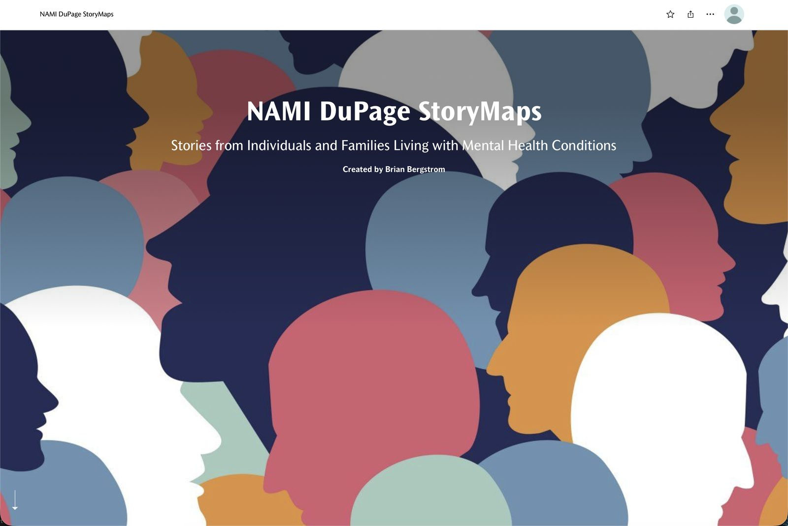

Civic — NAMI DuPage
You Are Not Alone
During my GIS internship at NAMI DuPage, I collected 31 community interviews in person — over bingo days at the community center, not a survey link I emailed out — and turned them into a StoryMap mapping mental health resources across DuPage County.
31 responses, 2 weeks, still live today